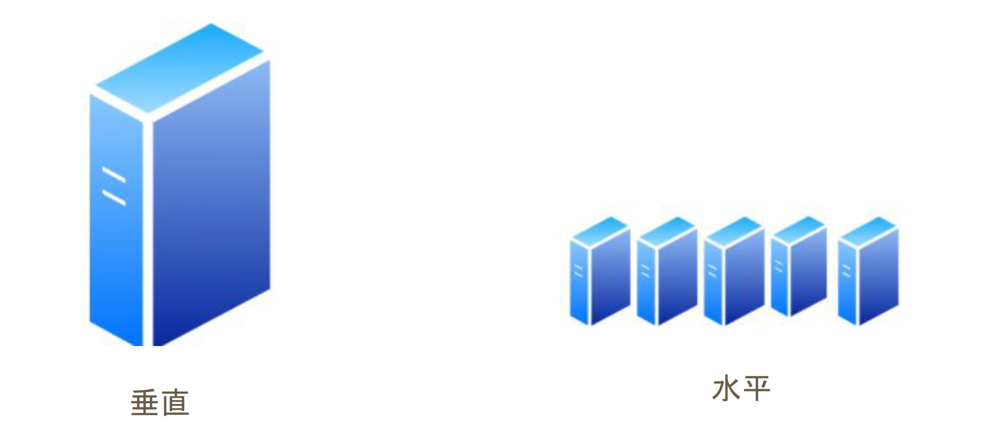
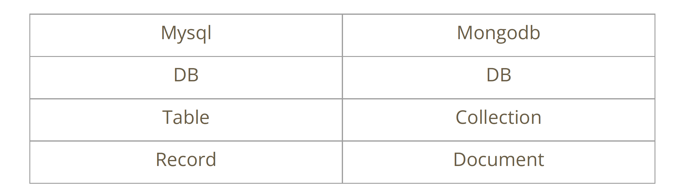
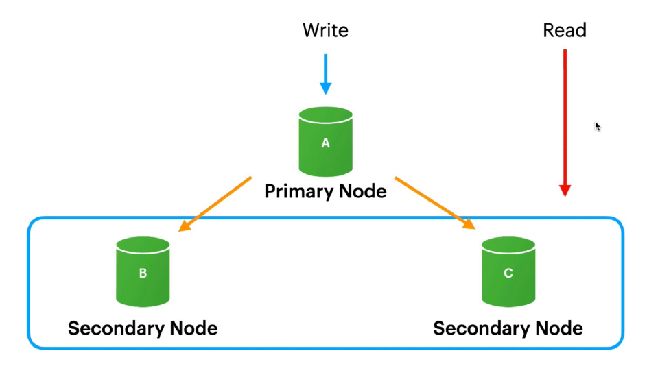
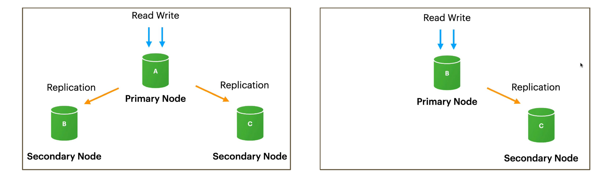
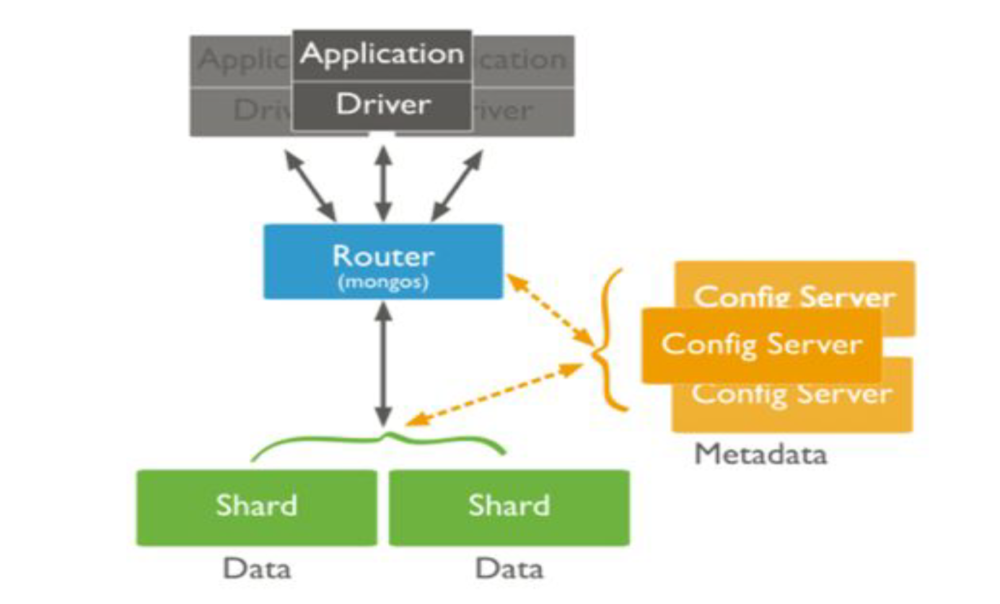
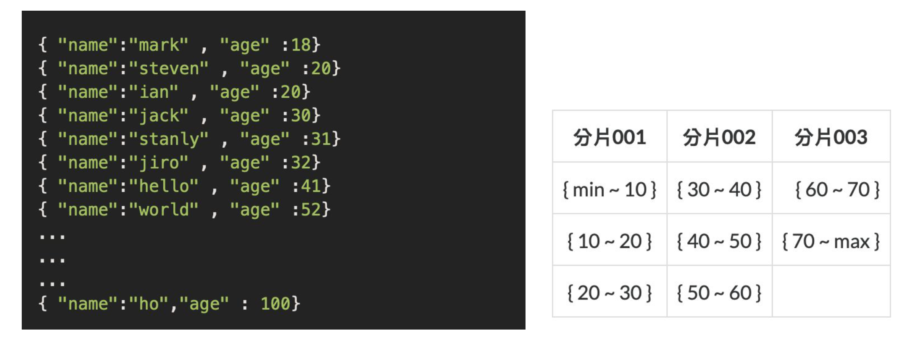
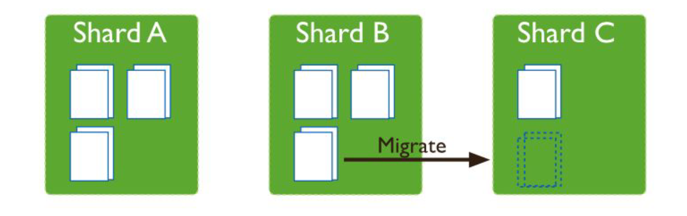
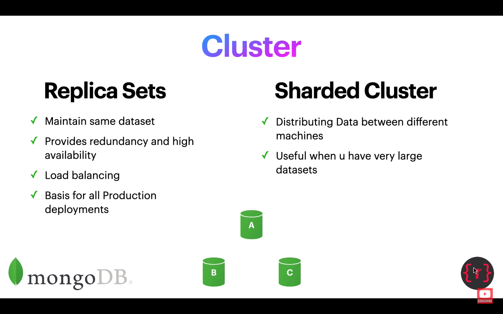
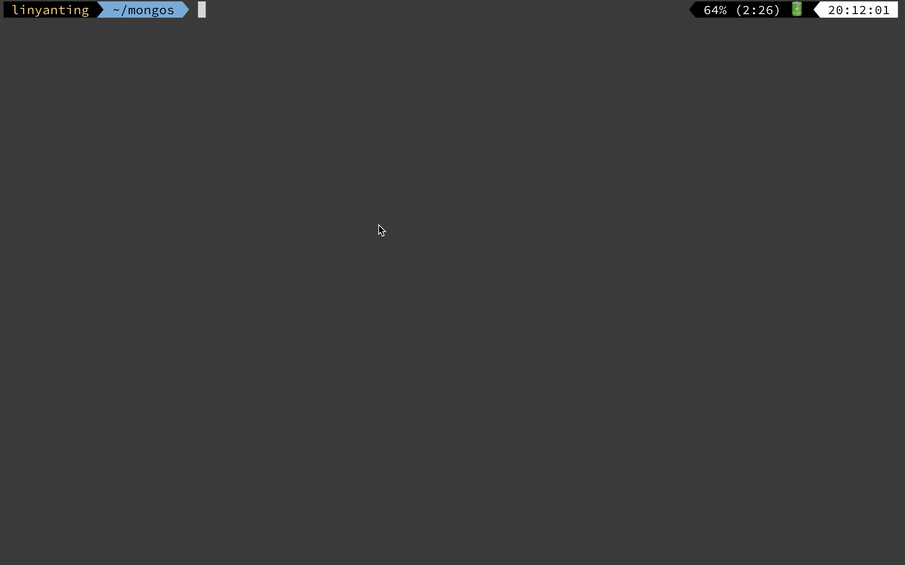
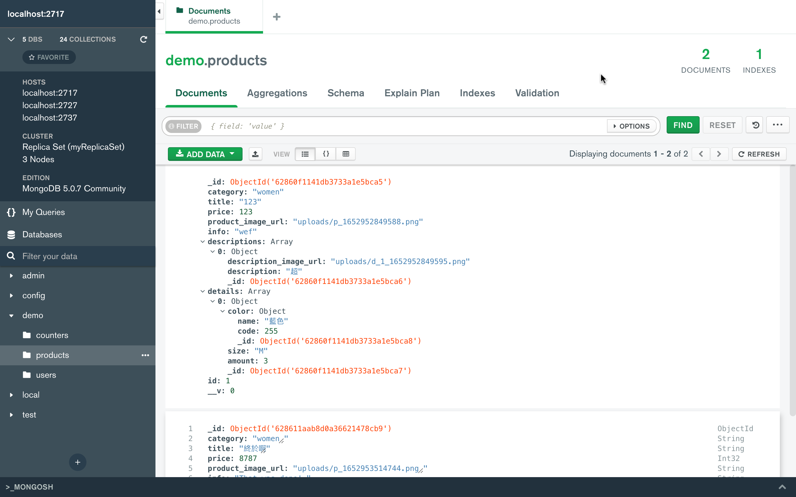

上台 Presentation 前做的筆記，在這邊記錄一下～
開場
嗨大家好，我們這組要介紹的呢，是 NoSQL Database 以及 Database Management，主要會是用 MongoDB 這個 NoSQL database 來做介紹。
待會我會先簡介 NoSQL，接著分享 Data Replica 和 Sharding 的概念，最後會實際 demo 給大家看 NoSQL 的資料與結構，以及，怎麼用 MongoDB 做到 Data Replica。
NoSQL
介紹
什麼是 NoSQL 呢？
它是一種不需要 schema 的資料庫，也就是不用像 MySQL 一樣，還要預先設計好 table 的欄位和關聯。
它是以 Key-Value 的方式來儲存資料的，可以把它簡單想像成它就是把資料存成 JSON，裡面存的東西可以是非常自由的。
然後它除了能垂直擴增，也具有水平擴增這個強項。
那麼什麼是垂直擴增？什麼是水平擴增呢？
Scale vertically vs Scale horizontally

垂直擴增可以把它想成，它就是一間工廠在升級設備和招募新的員工，技術上來說就是提升一台機器的 RAM 和 CPU，但終究會有個上限。
而水平擴增就像是開分店，也就是開很多台機器來共同支撐起整個任務，同樣也能達到升級的效果，除此之外還有一些好處，後面會在 Data Replica 的地方介紹到。
對照表

這是 MySQL 和 MongoDB 的簡單對照。
MySQL 裡面的 table，類似 MongoDB 的 collection；而 MySQL 裡面的 record，也就是一筆資料，類似 MongoDB 的 document。
Data Replica
Replica Sets

首先先介紹什麼是 Replica Sets。
它是由一群 mongod 程序組合而成的，可以把 mongod 程序想成是一台機器，所以 Replica Sets 就是會有一群機器這樣，每個 mongod 程序會 maintain 相同的 data，保持同步。
那你可能會好奇說，用 Replica Sets 有什麼好處呢？像 MySQL 開一台不就好了？
因為 Replica Sets 能提供 redundancy，也就是一台壞掉了，還有其他台可以提供資料，這樣能降低遺失資料的風險。
除此之外，還有 high availability 這個特性，它能排除 single points of failure 的問題，也就是一台壞掉了，整個資料庫的運作就崩潰了，它不會，它能確保整個資料庫的持續運作，一台壞掉了，會有其他台來 cover。
最後還可以達到 load balancing 的效果，也就是像上圖一樣，write 的話是由 primary node 來負責，而 read 則是由 B 和 C 這兩個 secondary node，可能依照某種方法來分配處理，這麼做就能緩解各 database server 的負擔。
架構與角色

整體大概是怎麼運作的呢？
任何 write 會由 primary node 來處理，並將所有操作記錄在 oplog 的檔案裡面，所以 secondary node 只要重現 oplog 裡面的操作，就能達到複製的效果。
而上面的右圖是在描述，當 primary node 掛掉的時候，會由所有 secondary node 透過某種方式來選拔，繼而取代原本的，然後升級成 primary node。
以圖來說明的話，就是 A 掛掉了，由 B 來接管 primary node 的位置，這樣整體就能夠照常運作，不受 A 掛掉而有太大影響。
oplog 文件
這邊快速簡介什麼是 oplog 文件。
它是 MongoDB 實現 replica set 的關鍵資料結構。
簡單來說，就是 primary node 的操作會記錄在 oplog，secondary node 就能透過 oplog 來更新，確保整個 replica set 的成員有一致的資料。
讀取操作
關於 MongoDB 的讀取，是透過 read preference 來設定的，一共會有五種 mode：
primary：這是預設的，也就是如果要從 replica sets 讀取資料，都是透過 primary node 來進行操作primaryPreferred：也就是大部分情況下都是透過 primary node，若 primary node 發生狀況才從 secondary node 讀取secondary：全部都是從 secondary node 讀取secondaryPreferred：其實跟剛剛 primaryPreferred 差不多，只是主要是從 secondary node 來讀取nearest：這個就沒有分 primary node、secondary node，而是根據一個特定的 latency threshold (由 localThresholdMS、maxStalenessSeconds 等參數計算出來)，隨機從 replica sets member 當中挑一個來讀取
Sharding
透過 sharding，可以將資料分散在不同的機器上，提高資料的存取效率，是一種水平擴增的方式。
然後 shard 這個英文單字其實還蠻少見的，所以看到 sharding 可能會不知道它在幹嘛，其實可以把它看成它就是一種 partition，只是是透過開多台機器，也就是水平擴增的方式來分 part。
架構與角色

整個流程大概是這樣：
一個 shard 就是一個 replica sets，也就是各自的 shard 會有所謂的 primary node 和 secondary node。
mongos，是一個提供 client 端存取 shard 的介面。
而 config server 儲存一些 metadata 和設定檔，像是告訴 mongos 當前的資料該存到哪一個 shard，或是要從哪一個 shard 去要資料，這個運作機制待會會提到。
Chunk

chunk 其實就是一堆 document，為了將資料分散儲存，就必須找一個方法來管理，所以 NoSQL 的做法就是將 document 的某一個欄位定義為 shard key，以上圖為例的話，就是 age 年齡。
至於怎麼去分配呢？可以透過 range-based sharding 或是 hash-based sharding 的方法去做分配！
Range-Based Sharding
Range-based sharding 就是將 document shard key 欄位的值，透過 range 的範圍進行分配。
像上圖就是 range-based sharding，看 age 也就是 document shard key 來決定該分配到哪個 chunk。
Hash-Based Sharding
Hash-based sharding，顧名思義，就是透過一個 hash function，將我們所指定的 shard key 欄位進行雜湊。
以年齡的例子來舉例的話，如果是「16 歲」就會被 hash 到「青少年」，而「65 歲」就會被 hash 到「老年」。
透過這樣的方式將資料分散到各個 chunk 當中。
Balancing

這邊有個 Balancing 的機制，如果 shard 之間的 chunk total size 差異過大，就會做 migration，也就是 shard 移轉某個 chunk 的責任給另外一個 shard，確保數據分配的平衡，也就是所謂的 load balancing。
小比較

Setup MongoDB for Production deployment - Replica Sets cluster
好，這是我們理論分享的部分，接著要來 demo 給大家看怎麼用 MongoDB 做 Data Replica～
Demo
前置作業
資料庫總要有個地⽅放資料，所以我們先建資料夾來當作它存放資料的地⽅。
因為要 demo 有⼀個 primary node 和兩個 secondary node 的 replica sets，所以我建三個：
1 | mkdir -p ~/mongos/db4 |

接下來⽤ mongod 來啟動 MongoDB process，參數分別是你要開在哪個 port、選⽤哪個資料夾來存放資料，以及 replica sets 的名稱，可以隨便命名，那我⼀次開：
1 | mongod --port 2747 --dbpath ~/mongos/db4 --replSet anotherReplicaSet |

（小插曲：tmux）
這樣就不用開很多 Tab 了！
操作小筆記：
- 進行水平分割：
<Ctrl+b> + " - 進行垂直分割：
<Ctrl+b> + % - 移動到其他 pane：
<Ctrl+b> + <方向鍵>（或是參考這個就可以用滑鼠來操作～） - 關閉目前的 pane：
<Ctrl+b> + x
設定 replica sets
接著⽤ mongo 連進去你想要讓它當 primary node 的 process，然後做⼀些設定。
1 | mongo mongodb://localhost:2747 |
先初始化，然後把另外兩個也加進來，它們就會是 secondary node。
1 | rs.initiate() |
透過這個指令，可以看到 replica sets 中有哪些 member：
1 | rs.status() |

模擬 Primary 發生問題
我現在來模擬⼀下，如果 primary node 因為⼀些問題掛掉了，看看會發⽣什麼事情：
1 | mongo mongodb://localhost:2757 |
你看！它現在已經變成了 primary，這個時候我們再透過 rs.status() 這個指令來看⼀下整體狀況：

把 Primary 的關掉，可以注意一下其他 Node 的 stateStr 變化：
1: not reachable/healthy
2: PRIMARY
3: SECONDARY
重新啟動 Primary 以後：
1: SECONDARY
2: PRIMARY
3: SECONDARY
這就是剛剛所提到的，當⼀台壞掉了，會有其他台來 cover，這樣就能夠確保整個資料庫的持續運作！
讓 Secondary 讀得到 Primary
好，我現在來 demo 怎麼讓 secondary 讀到 primary 的資料。
我先在 primary 裡⾯加點東⻄：

試著用第三台去看：

重啟第一台試試：

來看⼀下整體狀況：

MongoDB 裡面的資料
最後給⼤家看⼀下 MongoDB 的資料和結構：

推薦大家這個方便操作＆查看 MongoDB 的圖形化介面：MongoDB Compass
（Easily explore and manipulate your database with Compass, the GUI for MongoDB.）
希望讀完這篇文章的您能夠有所收穫，我們下篇文見啦 😃